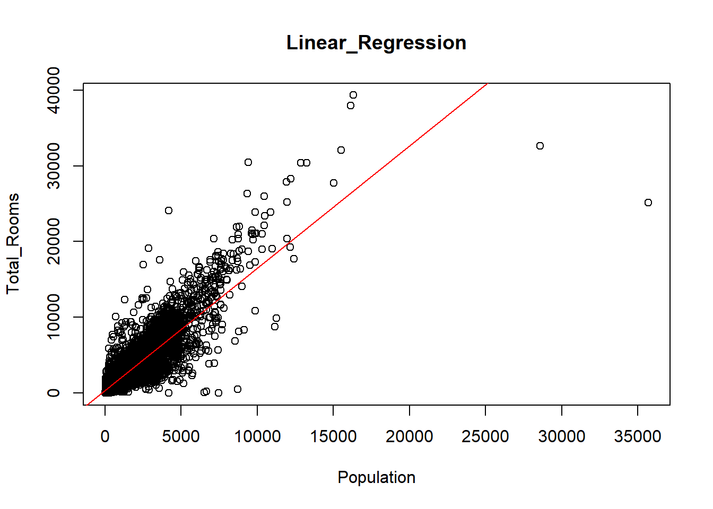

# Install and load required libraries
library(dplyr)
Attaching package: 'dplyr'The following objects are masked from 'package:stats':
filter, lagThe following objects are masked from 'package:base':
intersect, setdiff, setequal, unionlibrary(tidyr)
library(ggplot2)
library(caret)Loading required package: latticelibrary(randomForest)randomForest 4.7-1.1Type rfNews() to see new features/changes/bug fixes.
Attaching package: 'randomForest'The following object is masked from 'package:ggplot2':
marginThe following object is masked from 'package:dplyr':
combinelibrary(glmnet)Loading required package: Matrix
Attaching package: 'Matrix'The following objects are masked from 'package:tidyr':
expand, pack, unpackLoaded glmnet 4.1-8library(xgboost)
Attaching package: 'xgboost'The following object is masked from 'package:dplyr':
slicelibrary(pROC)Type 'citation("pROC")' for a citation.
Attaching package: 'pROC'The following objects are masked from 'package:stats':
cov, smooth, var# Set seed for reproducibility
set.seed(123)
# Generate random dataframe
n <- 1000
df <- data.frame(
feature1 = rnorm(n),
feature2 = rnorm(n),
feature3 = rnorm(n),
target = rbinom(n, 1, 0.5)
)
# EDA
summary(df) feature1 feature2 feature3 target
Min. :-2.80978 Min. :-3.04786 Min. :-2.84855 Min. :0.000
1st Qu.:-0.62832 1st Qu.:-0.65322 1st Qu.:-0.65619 1st Qu.:0.000
Median : 0.00921 Median : 0.05485 Median :-0.05057 Median :0.000
Mean : 0.01613 Mean : 0.04247 Mean :-0.02011 Mean :0.486
3rd Qu.: 0.66460 3rd Qu.: 0.75345 3rd Qu.: 0.64258 3rd Qu.:1.000
Max. : 3.24104 Max. : 3.39037 Max. : 3.42110 Max. :1.000 str(df)'data.frame': 1000 obs. of 4 variables:
$ feature1: num -0.5605 -0.2302 1.5587 0.0705 0.1293 ...
$ feature2: num -0.996 -1.04 -0.018 -0.132 -2.549 ...
$ feature3: num -0.512 0.237 -0.542 1.219 0.174 ...
$ target : int 0 0 0 1 0 1 0 1 1 0 ...cor(df) feature1 feature2 feature3 target
feature1 1.00000000 0.08647944 -0.01932954 -0.07269625
feature2 0.08647944 1.00000000 0.02650333 -0.03986642
feature3 -0.01932954 0.02650333 1.00000000 -0.04993487
target -0.07269625 -0.03986642 -0.04993487 1.00000000# Visualization
ggplot(df, aes(x = feature1, y = feature2, color = as.factor(target))) +
geom_point() +
ggtitle("Scatter plot of Feature1 and Feature2") +
theme_minimal()
# Pairwise scatter plots with color by target
plot_pairs <- ggplot(df, aes(color = as.factor(target))) +
geom_point(aes(x = feature1, y = feature2)) +
geom_point(aes(x = feature2, y = feature3)) +
geom_point(aes(x = feature1, y = feature3)) +
ggtitle("Pairwise Scatter Plots with Color by Target") +
theme_minimal()
# Display the plot
print(plot_pairs)
# Distribution of each feature by target
plot_dist <- ggplot(df, aes(x = feature1, fill = as.factor(target))) +
geom_density(alpha = 0.5) +
ggtitle("Distribution of Feature1 by Target") +
theme_minimal()
# Display the plot
print(plot_dist)
# Similar plots for other features (feature2, feature3)
plot_dist_feature2 <- ggplot(df, aes(x = feature2, fill = as.factor(target))) +
geom_density(alpha = 0.5) +
ggtitle("Distribution of Feature2 by Target") +
theme_minimal()
plot_dist_feature3 <- ggplot(df, aes(x = feature3, fill = as.factor(target))) +
geom_density(alpha = 0.5) +
ggtitle("Distribution of Feature3 by Target") +
theme_minimal()
# Display the plots
print(plot_dist_feature2)
print(plot_dist_feature3)
# Boxplots for each feature by target
plot_boxplot <- ggplot(df, aes(x = as.factor(target), y = feature1, fill = as.factor(target))) +
geom_boxplot() +
ggtitle("Boxplot of Feature1 by Target") +
theme_minimal()
# Display the plot
print(plot_boxplot)
# Similar plots for other features (feature2, feature3)
plot_boxplot_feature2 <- ggplot(df, aes(x = as.factor(target), y = feature2, fill = as.factor(target))) +
geom_boxplot() +
ggtitle("Boxplot of Feature2 by Target") +
theme_minimal()
plot_boxplot_feature3 <- ggplot(df, aes(x = as.factor(target), y = feature3, fill = as.factor(target))) +
geom_boxplot() +
ggtitle("Boxplot of Feature3 by Target") +
theme_minimal()
# Display the plots
print(plot_boxplot_feature2)
print(plot_boxplot_feature3)